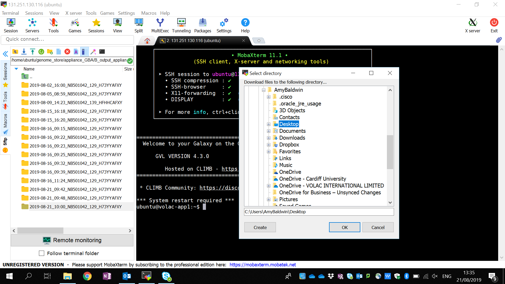

Logging in
Open MobaXterm on your Volac laptop.
If MobaXterm isn’t already installed on you Volac laptop call the Volac Service desk on 0845 3511924 or volac.servicedesk@scc.com, and ask them to install it for you. The information can be found here: https://mobaxterm.mobatek.net/.
If you have logged in previously, double click on a User Session.
{: style="height:300px" }
Folders can be found in the side bar to the left. Folders and files can be directly dragged and dropped between your personal computer and the Tool. This Tool is located inside the genome_store folder.
Opening a stable connection (recommended)
You currently have access to the Tool if you have completed the above section. However, sometimes the network connection between the computer that you are using and the machine where the Tool is located can break. If the Tool is running when the connection breaks, even if the break is only brief, the Tool will stop. You can tell if this has happen because your terminal’s window will freeze; there may also be a partially populated output folder. A terminal multiplexer (tmux) solves this.
A terminal multiplexer allows the user to start a session and then detach, so a remote process continues running even when the user is disconnected. It also has the benefit of allowing the user to detach from one computer and reattach using a different computer.
To initiate a tmux session in the Appliance terminal window enter:
tmux new -s <name>
Example
This is the code to set up a stable tmux connection named Idris:
tmux new -s Idris
Tip
- You can set up multiple tmux sessions; give each one a different name.
- To detach from a session hold down the Ctrl key and press
b, release both keys, then pressd. - To list existing tmux sessions use
tmux ls. - To reconnect to an existing session use
tmux a -t <name>.